MicroLED A/B 与 VCSEL 的 PVT 验证
2026 年 11 月 17 日 · 原理图阶段 · Open MicroLED Driver ASIC
这轮实验检验三件事：A 能否在供电变化时维持两个设定电流，B 能否在持续输入数据时及时关断，VCSEL 的有限驱动输入级能否在工艺、温度和供电变化后保住接收余量。每条路线沿用上一阶段的负载、接收模型与门槛。
- B 的修订保护在慢热低压完整故障帧中，最后一次超过关断电流门槛约在 5.07 ns，恢复上界约 81 ns。快冷高压重接与 100 µA 档温漂仍需分别修正。
- A 的差分感测将九点 DC 最大误差从 135.84% 降至 1.32%。另一个采用两级前置驱动重配的版本恢复了名义条件 1.6 Gb/s 接收，电流精度尚未覆盖九点 ±1%。
- VCSEL 的命令栅极加 330 Ω 后，名义和典型高压的 8.8 Gb/s 完整接收通过。慢热低压通过 6.4 Gb/s，供能源能耗约 5.90 pJ/bit。该角的 8.8 Gb/s 还受内部电流切换与接收余量约束。
证据审计覆盖 470 个案例，其中 A 252 例、B 129 例、VCSEL 89 例，包含标定、失败和短窗。审计核对实际网表、码型、负载、输入快照及压缩和解压波形的身份。
验证条件
TT 为典型工艺。SS 与 FF 分别取慢、快的 N/P 管组合。SF 和 FS 分别取慢 N 快 P、快 N 慢 P。先跑单独温度变化和单独供电变化，再考察四个工艺与温压的组合。工况与分阶段仿真约束见实验计划。固定工艺角按 PDK 模型段取值，未加入器件局部失配。(GF180MCU 3.3 V/6 V 固定工艺角说明)
| 参数 | MicroLED A/B | VCSEL |
|---|---|---|
| 电气负载 | 20 µm 黄光 I–V，200 fF，1 Ω / 0.5 nH | 850 nm 图读 I–V，150 fF，0.5 Ω / 0.2 nH |
| 电流目标 | 25 / 100 µA，各 ±1% | 3 / 7 mA，各 ±1% |
| 接收条件 | 200 ps 光学时间常数，1 GHz 接收代理 | 上一版 VCSEL 光学代理，5 GHz 接收代理 |
| 比较速率 | 净 1.6 Gb/s | 净 8.8 Gb/s，6.4 Gb/s作对照 |
| 供电变化 | VIN、VDD、VLED 同向 ±5%，DATA/DISABLE 高电平随 VDD。VREF 固定 2.5 V | VLASER、VDD、VREF、VPHY 同向 ±5%。精密设定和外部命令保持固定 |
| 统计边界 | VIN、VDD、VREF、VLED、D0、D1、DISABLE，共 7 源 | VLASER、VDD、VREF、VSET、VREGSET、D、DB、VPHY，共 8 源 |
完整接收帧有 4736 个线路位，其中 4096 个用于有效载荷评分。验收同时检查训练段与验证段零观察错、7.5 µAeq 幅度余量和 0.37 线路 UI 的单侧时间余量。净 1.6 Gb/s 的线路 UI 为 540.54 ps，门槛正好是 200 ps。净 8.8 Gb/s 的线路 UI 为 98.28 ps，门槛为 36.36 ps。3.3 V MOS 的最大端间差 3.63 V、6 V MOS 的 6.00 V 和 0.30 V 体结正偏均沿用项目的研究筛查值。
正向供能 E+、返还能量、净能量分别积分。报告在正常或保护释放后的完整帧上列能耗，另以功率描述关断窗口。对有错或余量失败的数据，分母为同样的 4096 个尝试发送位。短窗单独标出初始状态和验证范围。
温度扫的是 PDK 器件。MicroLED 静态曲线来自 Lin 等的 20 µm 黄光样品，曲线温度未注明。VCSEL I–V 由 Giannakopoulos 等图 8A 的 25 °C 曲线读出。两种模型的 I–V、结电容假设与光学动态参数在本轮固定。关断目标 0.1 µA 恰好是 MicroLED I–V 的最低校准点，远低于此的数值依赖延拓，需要低电流和光功率实测。(MicroLED 论文与数据入口，VCSEL 论文图 8)
A 的电流精度为什么对供电敏感
A 使用两条分流调节的电压轨控制 LED 阴极，DATA 选择高轨或低轨。上一版调节器的设定来自固定 2.5 V 参考电压。LED 阳极供电抬高时，阴极设定近似固定，因此 LED 两端的正向压差也抬高。I–V 曲线在这里陡峭，约 3 mV 就足以让电流变化 1%。
| 电流目标 | 名义 LED 端压 | ±1% 电流对应的压差变化 | 固定阴极，阳极分别降、升 0.25 V |
|---|---|---|---|
| 25 µA | 3.36134 V | −2.692 至 +2.692 mV | 9.74 / 58.13 µA |
| 100 µA | 3.76791 V | −2.955 至 +2.828 mV | 42.50 / 252.50 µA |
上表来自冻结曲线的逐段线性插值。完整电路还有高边隔离器件、输出开关、调节器误差，基于实测 I–V 模型的电路仿真因此与固定阴极估算不同。曲线同源留出插值误差也达到毫伏量级，复现一条曲线上的 ±1% 仍需实物复核。 压差计算数据
用差分感测跟踪供电
两条电压轨改为分别比较 a·LEDREF 与 a·VH/L + b·VREF。调节环在正常线性工作时维持近似相等，得到 LEDREF − VH/L ≈ (b/a)·VREF。LEDREF 取高边隔离开关前的供电节点，关断时调节环不会跟随浮动的 LED 阳极。仍然使用两路真实 MOS OTA 与分流管。每个方案只在名义条件校准一次，随后用相同电阻值跑九个工况。
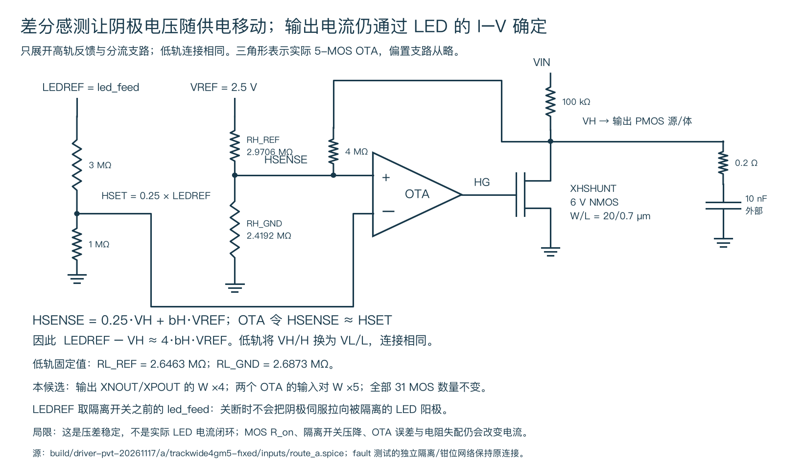
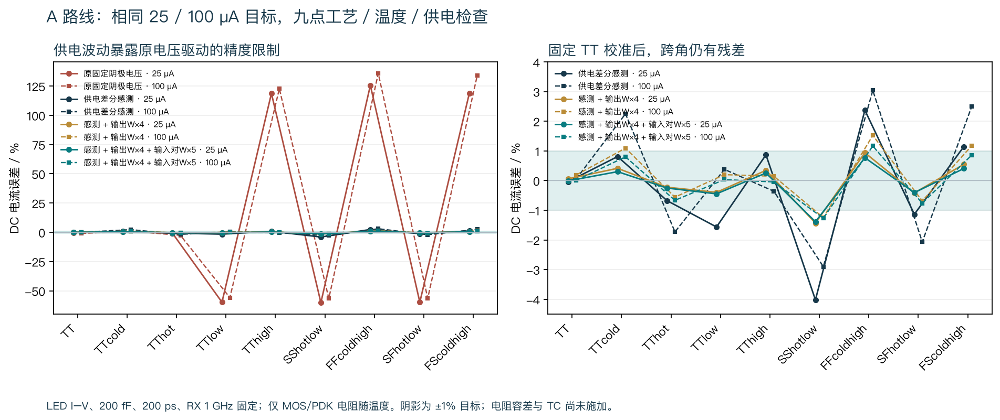
| A 修订 | 两档 × 九点 DC 通过数 | 最大绝对误差 |
|---|---|---|
| 原固定阴极电压 | 5/18 | 135.844% |
| 供电差分感测，系数 0.25 | 7/18 | 4.020% |
| 差分感测加长 OTA 沟道 | 7/18 | 3.953% |
| 差分感测，输出 MOS 栅宽 ×4 | 13/18 | 1.523% |
| 上述输出修改，OTA 输入对栅宽 ×5 | 15/18 | 1.387% |
| 上述 MOS 尺寸，感测系数提高到 0.37 | 15/18 | 1.319% |
加宽输出开关可降低串联压降。加宽 OTA 输入对后，输入误差下降，栅电容也增大。继续提高感测系数从 0.25 到 0.37 的 DC 收益有限，表明隔离管和输出开关的压降需要纳入精度预算。该结构用一次校准确定的固定电阻值跟踪电源变化，精度仍依赖器件 I–V、参考电压和电阻比。
100 µA 档的约 3 mV 总误差只占 3.77 V 的约 0.08%。这个预算要由参考电压误差、电阻比、OTA 输入误差及两只串联开关共同分摊。即使压差完美固定，真实发光器件的 Vf 改变也会改变电流。下一版若以跨温度 ±1% 为硬指标，优先比较慢环电流校准加快速数据通路，以及直接调节电流基准的架构。两者都应先测实际 LED 电流与 Vf，再给电阻容差、取样精度和开关压降分配预算。
直流改善之后仍有高速与恢复瓶颈
在慢热低压，原电路两档只有 9.970 / 43.391 µA。完整帧的接收信号一直低于 62.5 µAeq 判决阈值，释放后的第二帧有 2061 / 4096 个错误。宽输出管和宽输入对的差分感测版本把两档提高到 24.653 / 98.730 µA，后续完整帧降到零观察错，但幅度仅 3.322 µAeq、时序 0.149 UI。同时，整段体结正偏仍有 0.338 V，高于 0.30 V 门槛。
| 净 1.6 Gb/s，保护释放后第二帧 | 错位 / 4096 | 单侧时间 (UI) | 七端口 E+ (pJ/bit) | 全段最大体结正偏 |
|---|---|---|---|---|
| 慢热低压，原电路 | 2061 | 0.000 | 0.934 | 0.351 V |
| 慢热低压，差分跟踪及宽管 | 0 | 0.149 | 1.325 | 0.338 V |
| 名义，差分跟踪及宽管 | 0 | 0.363 | 1.474 | 0.220 V |
| 快冷高压，差分跟踪及宽管 | 0 | 0.413 | 1.608 | 0.195 V |
该宽管版本在名义条件距 200 ps 接收门槛约 4.04 ps。在慢热低压，恢复后的正常数据眼仍不够宽，因此有限记录内未达到恢复门槛。原慢热低压没有阈值交点时，旧恢复评分器还出现空数组索引错误。报告采用同一原生数据的追加复算，网表、原结果、波形和错误日志均保存。
快冷高压的同版在约 13.80 ns 通过恢复筛查。关断后导电电流峰为 0.00726 µA。该角 100 µA 的 DC 结果为 101.165 µA，因此仍越过精度门槛。
第 2 帧仍有轨电压和去耦储能变化。该宽管版名义和慢热低压的监测端点漂移分别约 12.7 和 10.4 mV，显式电容储能变化绝对和分别约占各自帧净能量的 4.9% 和 4.0%。表内 E+ 是有限记录的源供能。需要更长连续仿真及去耦核算，才能比较稳态效率。
两级前置驱动要一起看
只将末级前置反相器 XN2/XP2 加宽为原来的两倍时，前级 N1 的负载随之增加。在同一段码型的原生数据中，DATA 到 N1 的平均交点延迟从 124.43 增到 179.03 ps。N1 同时驱动前馈电容，慢下来会改变输出边沿补偿。随后仅把前一级 XN1/XP1 也加宽为两倍，名义净 1.6 Gb/s 的时序余量恢复。两点使用相同的正常第一帧和 DC 校准参数。
| 名义净 1.6 Gb/s，正常第一帧 | 错位 / 4096 | 时间余量 | E+ (pJ/bit) | 接收和应力 |
|---|---|---|---|---|
| 仅加宽第二级前置反相器 | 0 | 182.89 ps | 1.908 | 时间余量不足 |
| 两级前置反相器均加宽 | 0 | 214.40 ps | 1.787 | 通过 |
两级修订让名义余量比 200 ps 门槛多 14.4 ps，较上一轮原 A 的相同正常首帧 1.137 pJ/bit 增加约 57%。这一证据为名义正常通信。两级修订的九点 DC 误差和 0.25 系数宽管版一致，最大绝对误差仍约 1.387%。极端角恢复和端压需要在这个版本上重新验证。
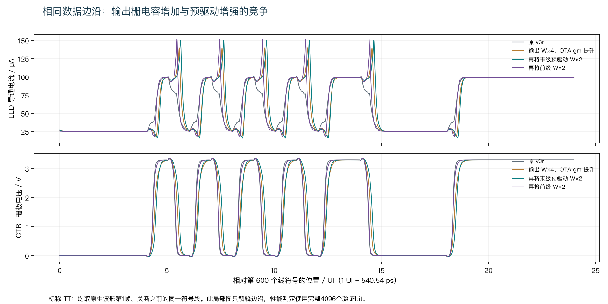
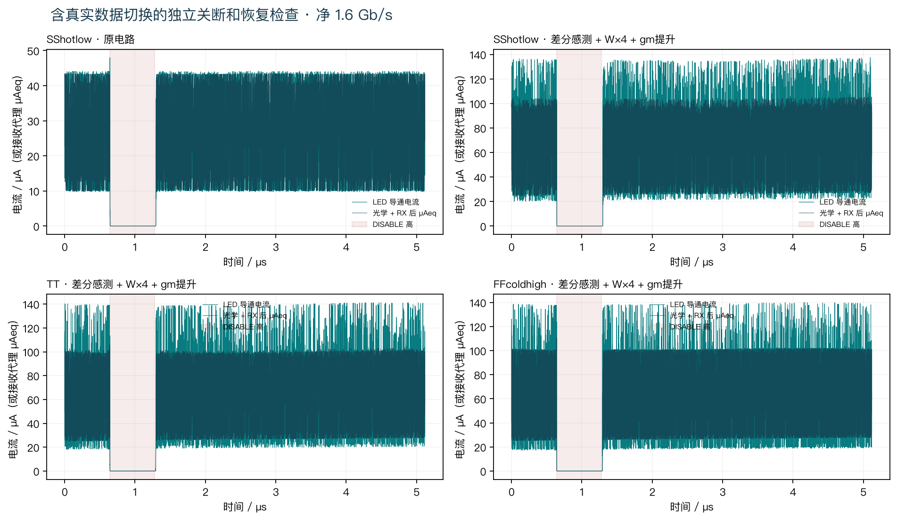
B 的钳位为什么需要更高的栅压
B 的高边 PMOS 把供电与 LED 阳极断开，跨 LED 的 NMOS 钳位同时缩小阳极和阴极的压差。原钳位由 3.3 V DISABLE 驱动。阴极还处于正电位时，NMOS 可用的 VGS 等于栅电压减阴极电压。体端接地造成正的 VSB，阈值进一步抬高。钳位在这一段的实际导电能力可能随角落大幅变化。
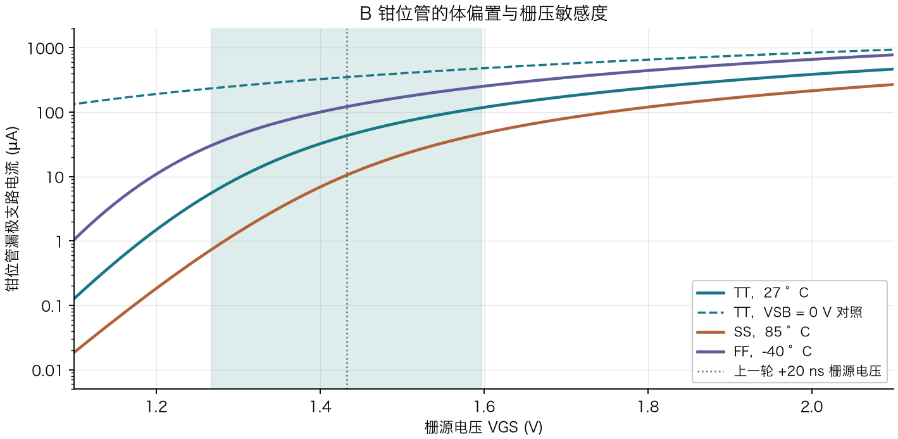
同一组端压下，TT 的漏极支路电流从 VSB = 0 V 时的约 350 µA 降到 VSB = 1.868 V 时的约 43 µA。SS 高温的固定偏置探针得到约 10.5 µA，但同角整电路节点会重新分配，必须在关断波形上读取实际栅源电压和支路电流。独立夹具只说明灵敏度。 夹具数据与模型身份
慢热低压的原钳位在 +20 ns 时，实际阴极从名义的 1.868 V 下移到约 1.617 V。栅源电压反而约 1.518 V，模型钳位支路还有约 41.5 µA。LED 本身在同一时刻约 0.099 µA，两者是不同的电流路径。关断裕量由整套隔离、钳位、数据门控和电容的瞬态共同决定。
关断、隔离和恢复要按顺序验证
直接用高压域控制提高钳位栅电压可以明显加快关断。在快冷高压下，强钳位可能在高侧 PMOS 完全断开前把高电位传到阴极，使原本的低压输出管越限。加入钳位栅 RC 后，钳位在高侧动作之后逐步增强。释放保护时也要控制钳位栅的下降速率，避免栅漏耦合使阴极跌破地电位。延时与恢复电流都用保留的输入码型复测。
另一条耦合路径发生在低压数据门控。关断翻转 READY，NAND 内部节点变化经栅漏电容返回 DATA_GATE。简单减少已有的输入电阻可以压低该节点的正尖峰，却令 NAND 输出端的负尖峰再现。实际两级输入缓冲使这两处隔离，但增加栅负载、动态供能和延迟，仍需在完整帧中评分。
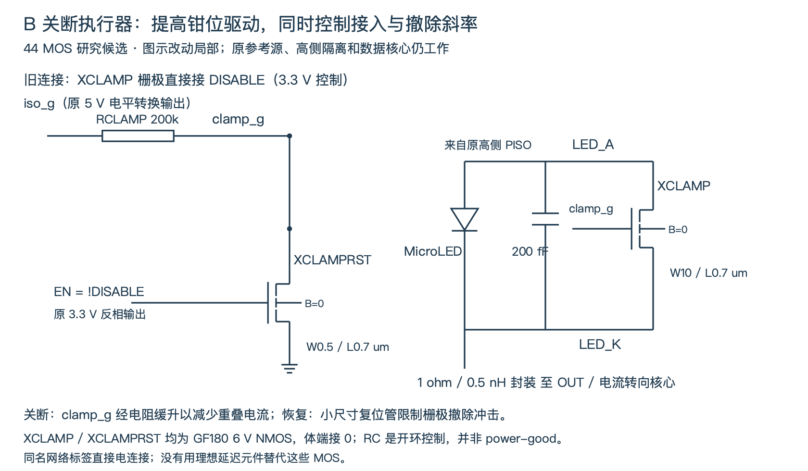
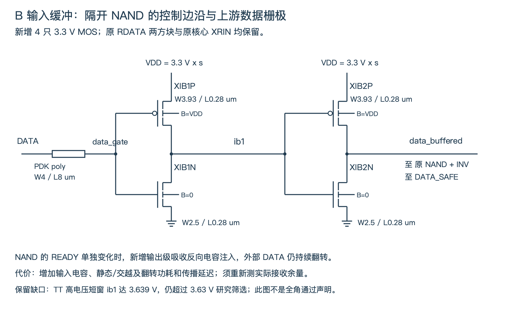
| B 慢热低压，匹配的关断短窗 | 最后一次超 0.1 µA | +20 ns 后最大导电电流 | 到 20 ns 的时间余量 |
|---|---|---|---|
| 原 3.3 V 钳位 | 19.60 ns | 0.09863 µA | 0.40 ns |
| 直接高压钳位 | 1.60 ns | 0.04316 µA | 18.40 ns |
| 控制接入斜率并隔离 DATA，复位管 W = 4 µm | 6.34 ns | 0.04123 µA | 13.66 ns |
各短窗从独立 DC 工作点开始，采用完整协议 608–704 ns 的同一 DATA 片段，在局部 32 ns 断言关断。完整故障帧使用后续 W = 0.5 µm 的复位管和实际关断前历史。
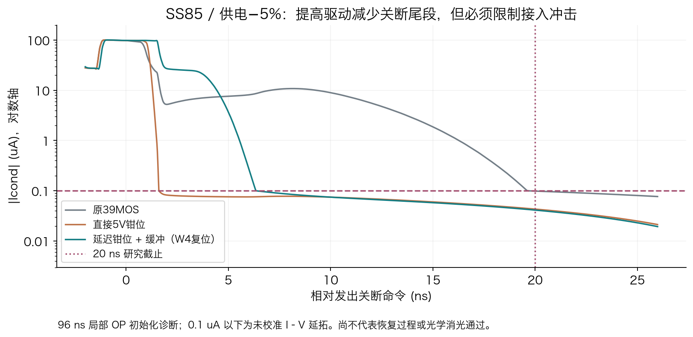
直接高压钳位的快冷高压关断动作让 OUT 升到约 3.772 V，因此后两项改动仍需要。将复位 MOS 宽度从 4 µm 减到 0.5 µm 后，短窗释放时的慢热低压体结峰值从 0.323 V 降到 0.261 V，快冷高压从 0.359 V 降到 0.286 V。快冷高压仍有 3.682 V 的 OUT 峰值，发生在高侧隔离管开始重新接通时。典型高压的 IB1 也曾达到 3.639 V。这两个问题分别涉及高压域恢复斜率与低压缓冲尖峰，应单独修改并复核。
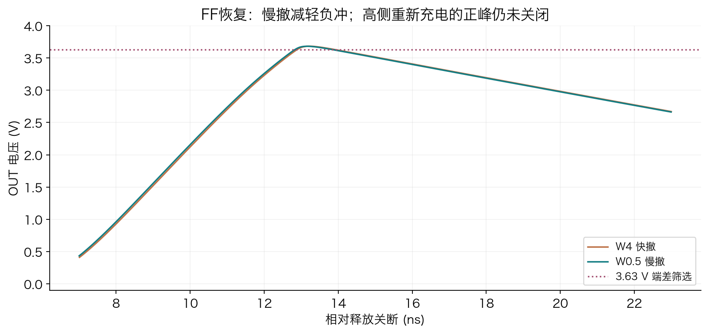
慢热低压完整故障帧
在完整 5.12 µs 中，原时标的 640 ns 关断、1280 ns 释放保持为相同命令，外部数据一直翻转。44 MOS 候选的超过 0.1 µA 的最后采样点为 5.073 ns，即距 20 ns 门槛约 14.93 ns。+20 ns 后到释放前的最大导电电流是 0.04358 µA。所有 MOS 端压和体结筛查通过，最大体结正偏约 0.261 V。
释放后复用故障前训练的采样相位，约 81.0 ns 恢复到既有接收门槛，之后持续观察约 3.76 µs。完整第二帧为 0 / 4096 观察错，幅度 16.50 µAeq、时序 0.40962 UI，正向 E+、返还能量和净能量分别为 1.02847、0.07876 和 0.94971 pJ/bit。首帧包含故意关断的区间，其错误数不用于正常帧指标。该保护原型的同角 100 µA 档仍约 97.46 µA。
在名义净 1.6 Gb/s 的正常首帧，新的 44 MOS 版也通过。4096 位零观察错，幅度余量 18.53 µAeq，时间余量 214.82 ps。与同样从工作点启动的上一轮正常首帧相比，E+ 从 1.001 升至 1.116 pJ/bit，约增加 11.5%。这组能耗比较采用相同首帧范围，恢复后第二帧另行报告。
首帧传播延迟用同一 DATA 边沿到实际换流门 GP 的 50% 交点读取。新版的上升和下降中值分别增加约 85 和 82 ps。接收采样相位可以适应这一固定延迟，所以传播更慢和采样余量仍通过可以同时出现。慢热低压的同版短窗将每 UI 最大步进由 1/40 减到 1/80，+20 ns 后电流由 0.043577 变为 0.043598 µA，释放体结结果也一致通过。完整 5.12 µs 故障帧的证据来自 1/40 UI 运行。
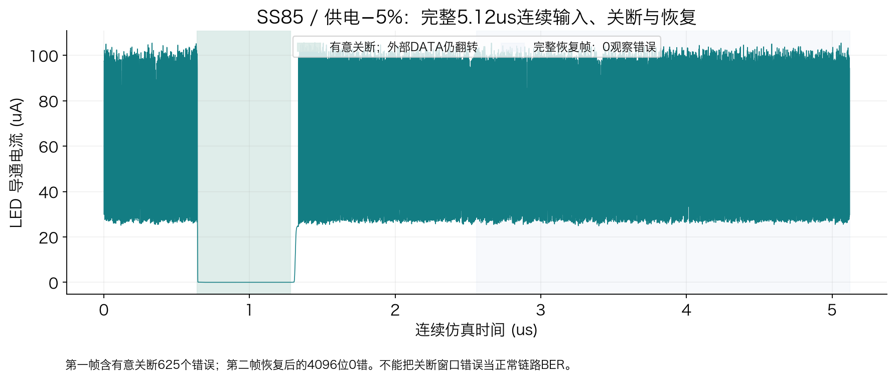
B 的电流镜温漂是另一项验证
原 B 的 25 µA 档九点都在 ±1% 内，100 µA 档却在 97.455–103.497 µA 之间。以三个相同单位管并联替代原尾管，并使参考、基流和尾电流单元采用相同 4/2 µm 几何，可减轻尺寸相关的温漂和镜像比例差异。按已观察的九点选择一次固定 RSET 微调，再在这些工况回验。25 µA 档为 24.949–25.239 µA，100 µA 档为 99.033–100.382 µA，九点两档均在门槛内，离边界最近的点分别只剩约 0.011 和 0.033 µA。独立工况和容差仍需验证。这个候选的 DC 结果与 44 MOS 关断候选分别来自各自网表，单位镜像的电容、动态速度和关断仍需联跑。
VCSEL 输入为什么会在切换时越限
VCSEL 路线用有限的上游 CMOS 反相器驱动互补的电流转向控制。两档 DC 电流由伺服环设定，命令切换后的负冲与驱动器通路时间常数和电荷耦合有关。反相器命令下降沿经栅漏电容向输出抽取电荷，此时其上拉管尚未完成接管。输出负冲会使 NMOS 漏端到体端的二极管正偏，也会增加上方 PMOS 源漏压差。低供电的主要边界可能是正偏幅度，高供电的主要边界可能是最大端压。
增加栅极串联电阻会降低实际栅端的边沿斜率。提高片上内部串联阻值、减少寄生电容、分配上下拉尺寸同样会改变摆幅和切换速度，实验用成对网表逐项检验。E+ 同时统计前级 VPHY 和命令，以免把负担移出账本。
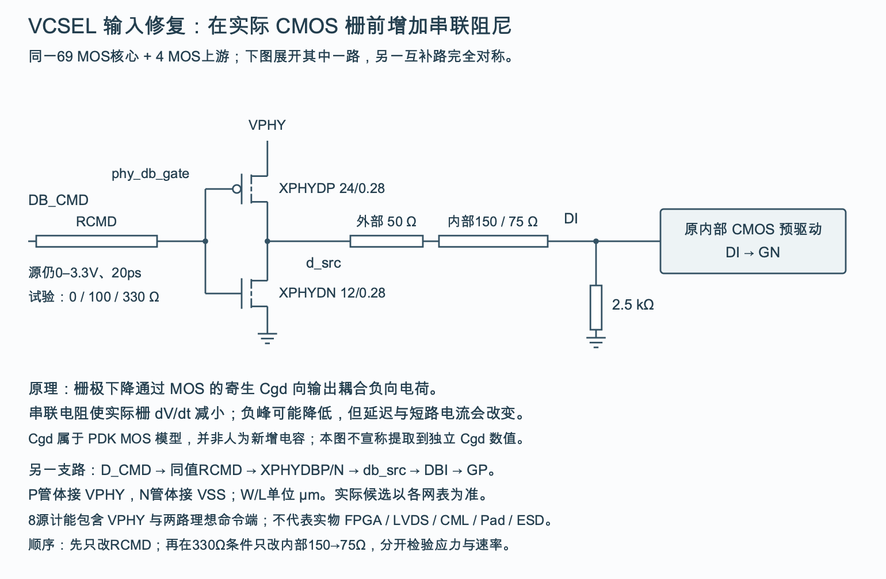
原输入级的 18 个 DC 状态均满足 3/7 mA 的 ±1%。慢热低压的短瞬态中，输入反相器输出出现约 −0.340 V 的下冲。高供电时，即使下冲变小，抬高的 VPHY 也使 PMOS 源漏端压接近上限。命令各加 100 Ω 后，快冷高压通过，但慢热低压仍有 0.313 V 体结正偏。加到 330 Ω 后，九点短窗的电气应力通过。其中典型高压峰值约 3.619 V，距 3.630 V 门槛约 11 mV。
慢角的限制还在换流及光学接收链
在相同慢热低压条件，原 8.8 Gb/s 的 4096 位验证段零错误，接收时序却只有 0.258 UI。对同一波形分段分析，DI 还有约 0.463 UI，GP/GN 约 0.375 UI，电气电流约 0.296 UI，固定光学及 RX 后降至约 0.258 UI。串 330 Ω 降低了输入端压尖峰，但也增加 GP/GN 的切换延迟，输出和接收进一步收窄。保留 330 Ω 并把内部串联电阻从 150 Ω 降为 75 Ω 后，慢热低压 8.8 Gb/s 的验证段降至 0 / 4096 错，训练段仍有 2 错，幅度仅 0.535 µAeq，时序仅 0.057 UI。
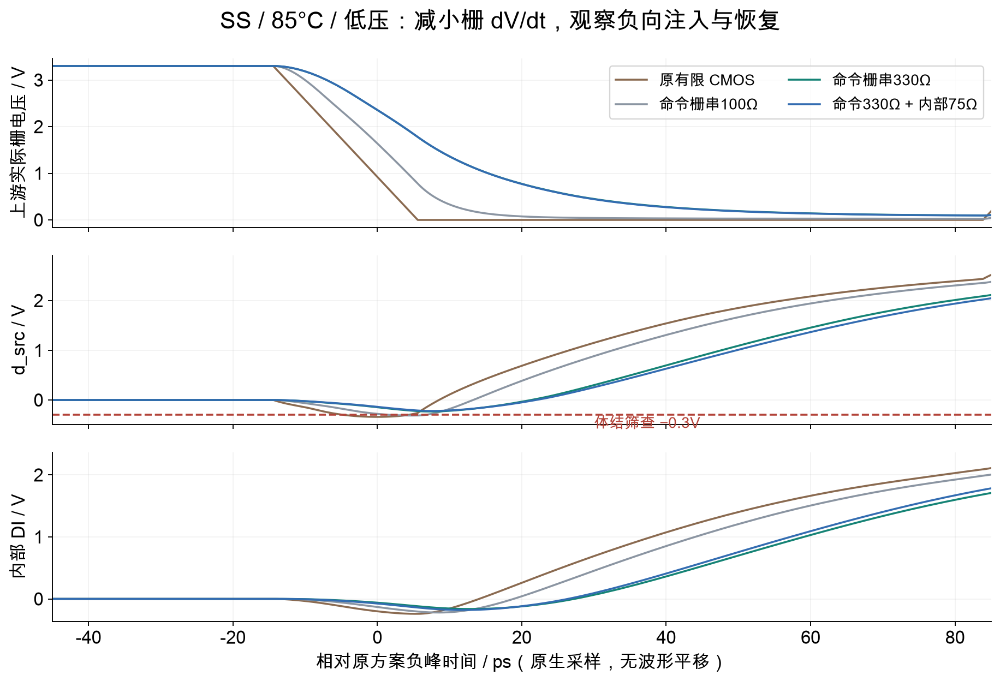
慢热低压 8.8 Gb/s 下，330 Ω 前后 VPHY 的正向供能从 0.774 降到 0.730 pJ/bit。两路命令的正向供能却从 0.195 升到 0.284 pJ/bit，返还给命令源的能量从 0.136 降到 0.043 pJ/bit。把这些端口一起计入后，总 E+ 从 4.449 增到 4.517 pJ/bit，约增加 1.5%。栅电阻改变了馈通及充放电路径，仅观察一个电源的电流会高估节能收益。
| 工况与电路 | 净速率 (Gb/s) | 错位 / 4096 | 幅度 (µAeq) | 时间 (UI) | E+ (pJ/bit) | 完整筛查 |
|---|---|---|---|---|---|---|
| TT 名义，原输入 | 8.8 | 0 | 29.907 | 0.438 | 4.711 | 通过，上一轮冻结基准 |
| TT 名义，330 Ω | 8.8 | 0 | 29.542 | 0.432 | 4.776 | 通过 |
| TT 高压，原输入 | 8.8 | 0 | 30.506 | 0.424 | 5.004 | 端压越限 |
| TT 高压，330 Ω | 8.8 | 0 | 30.286 | 0.415 | 5.075 | 通过 |
| SS 热低，原输入 | 8.8 | 0 | 11.678 | 0.258 | 4.449 | 体结、时间余量未过 |
| SS 热低，330 Ω | 8.8 | 178 | −2.608 | 0.000 | 4.517 | 接收未过 |
| SS 热低，330 Ω、内阻 75 Ω | 8.8 | 0 | 0.535 | 0.057 | 4.527 | 训练 2 错，幅度及时间余量未过 |
| SS 热低，330 Ω | 6.4 | 0 | 29.042 | 0.405 | 5.901 | 通过 |
慢热低压的 330 Ω 原型在 6.4 Gb/s 跨过接收门槛。由于偏置和参考电路仍连续工作，降速后平均 E+ 功率约 37.77 mW，每位能耗反而高于同工况 8.8 Gb/s 的失败试验。8.8 Gb/s 数据用来定位速度与能耗边界，6.4 Gb/s 才是该角当前通过的测试点。
半步长复算中，慢热低压 6.4 Gb/s 的时间余量为 0.40534 UI，E+ 约 5.901 pJ/bit。冻结 330 Ω 后用另一段 PRBS15 复核，4096 位零观察错误，幅度 27.117 µAeq、时序 0.43167 UI。码型改变会改变每位能耗，留出帧约 5.759 pJ/bit，不能与开发帧之差解释为电路进一步节能。典型高压 8.8 Gb/s 的半步长时序为约 0.41481 UI。半步长与留出仅表明所测条件下对数值步长和该码窗复核一致。
在慢热低压 6.4 Gb/s 的同速率对照中，原电路虽零观察错，体结仍达约 0.340 V。330 Ω 令体结正偏降到约 0.231 V，E+ 由 5.814 至 5.901 pJ/bit，时间余量由 0.437 至 0.405 UI。保留输入阻尼的代价在这组同速率、同负载数据中可直接衡量。
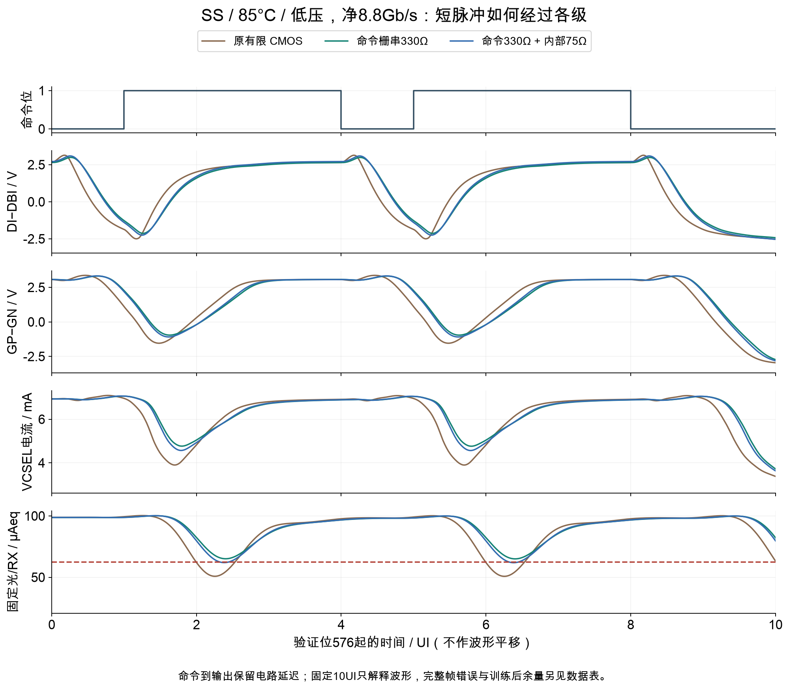
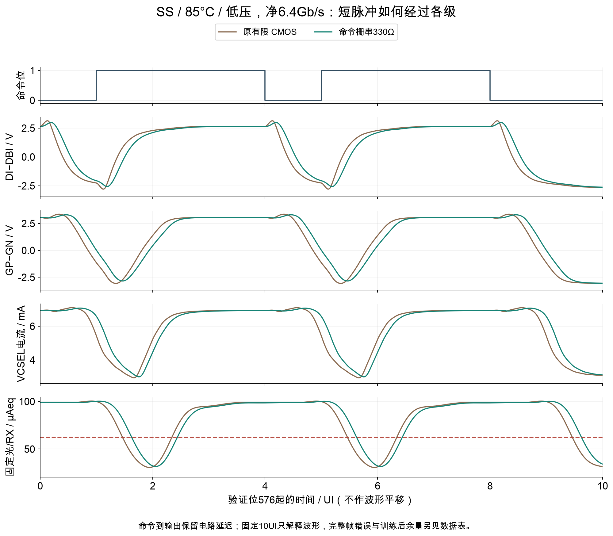
下一轮的设计优先级
- B 先消除恢复端压，再合并温漂改法。 分开调整高侧 PMOS 重接斜率和低压缓冲尖峰。对比固定 RC 与实际隔离状态互锁，并共同验证门控、恢复、DC 和完整帧。将等几何单位镜像接入后，再核对寄生对速度和能量的影响。
- A 将实际电流纳入校准。 用 A 的两级前置驱动保留名义时序，增加可测的 LED 电流反馈或慢速采样校准。根据实测 Vf 分配电阻比、开关压降和参考误差预算，优先在慢热低压复查两档电流与关断释放。
- VCSEL 以所测温压速率做接口预算。 先将 6.4 Gb/s 慢热低压和 8.8 Gb/s 名义作为分立测试点。进一步改善 DI 到 GP/GN 及电流切换的速度，给目前约 11 mV 的高压端压增加余量，再与真实输入、PAD/ESD、封装模型和负载共测。
当前 PVT 证据覆盖选定的 MOS 固定角、温度和同向供电变化。独立电阻工艺角、参考源容差、器件局部失配、供电瞬态、发光器件温漂和新的版图寄生仍是下一轮变量。最终器件的电光功率、长期漏电、BER 和工艺签核需要物理测试和对应签核资料。
验证与复现数据 · A 矩阵 · B 矩阵 · VCSEL 成对比较 · 共同证据审计 · GitHub 归档